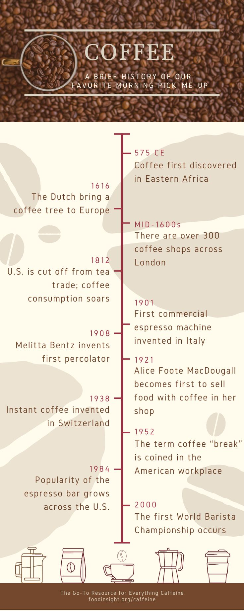

About Us
Bryan's Coffee is dedicated to providing the best coffee and snacks in town.
About Bryan's Coffee
Welcome to Bryan's Coffee, your go-to place for the best coffee in town!
Bryan's Coffee began with a simple vision: to bring the warmth and richness of premium coffee to our community. Our founder, Bryan, traveled the world to source the best beans and perfect the art of roasting. Today, our café is a cozy haven for coffee lovers who value quality, connection, and comfort.
What makes Bryan's Coffee stand out? We pride ourselves on using only sustainably sourced beans, brewing our coffee with the utmost care. Whether you're here for our signature espresso or a homemade pastry, you’re supporting ethical and local suppliers.
What Our Customers Say
"Best coffee in town! The atmosphere is perfect for unwinding or getting some work done." - Alex J.
"A hidden gem! Bryan’s Coffee has an amazing selection and the friendliest staff." - Mia P.
Join us today and become a part of the Bryan’s Coffee family. Your perfect cup is waiting!
Our History
Founded in 2010, Bryan's Coffee has been serving the community for over a decade.
